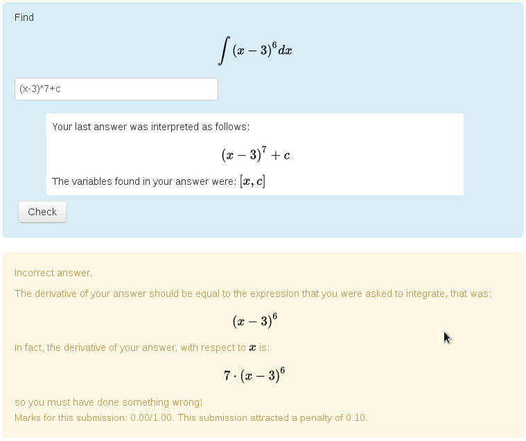

About the STACK Project
STACK is an assessment system for mathematics, science and related disciplines, designed to enable students to answer questions with a mathematical expression, such as a polynomial. Students are not limited to multiple choice.
Below is a typical STACK question. Note that the student's answer can be any algebraic expression, and that their answer is interpreted by the system before it is marked. This allows the student to confirm the answer is what they intended before being marked. Notice also the automatically generated feedback.

STACK uses a Computer Algebra System to power the assessment system. The built-in knowledge of mathematics that the computer algebra system provides opens up entirely new possibilities to computer-aided assessment.
Primarily, STACK provides a question type for the Moodle and ILIAS learning environments. STACK can be integrated into other systems using LTI.
A demonstration server is also available: https://stack.maths.ed.ac.uk/demo
Main STACK Features
STACK has many features.
Equivalent answers of the right form
STACK can accept equivalent expressions, for example . STACK can also establish the form of an answer, for example if it is factorised. STACK is designed to let teachers specify independent properties required in an answer.
Ask for examples
The system can mark questions that ask the student to provide an example.
Give an example of a function f(x) with a minimum at x=0 and a maximum at x=2.
Rather than comparing the student's answer to the teacher's answer, STACK checks that the answer has the required properties. Giving examples is a higher-order skill that is impossible to assess with conventional Computer Aided Assessment (CAA) systems.
Intelligent randomisation
Randomising questions is invaluable in ensuring students can practice and reducing sharing of answers. The trick is to reverse-engineer the randomised question from a randomised answer. Computer algebra is invaluable to support this process.
Give feedback and partial credit
Consider a question like: Give an example of a cubic polynomial with the following properties:
- ,
- at and at .
Here, STACK can check each condition separately on the student's answer and assign partial credit accordingly. If the student gave the answer for example, then STACK could reply: Your answer does have zeros at the required points but its value at zero is not equal to 1. You received 2 out of 3 points. Please try again. There are a variety of ways in which feedback can be given, including plotting the students' answer against the teacher's answer.
Multipart questions
STACK supports multipart questions, like the following:
(a) differentiate with respect to x.
(b) substitute into your answer.
You can have follow-through marking for situations where, for example, the student enters a wrong expression to part (a), but correctly substitutes in values into their expression in part (b). Here, STACK can recognise the work the student put into part (b), even though their answer is different from the "correct" answer.
Support for many types of questions
STACK has a large number of inputs and answer tests to support the diverse needs of users across mathematics and science. This includes support for questions about numerical accuracy, significant figures and scientific units. You can also assess students' ability to reason line-by-line with equivalence reasoning.
Further information
- The philosophy of STACK.
- A demonstration server.
- Associated publications.
- STACK Community and Credits.
- The mathematics behind the STACK logo.